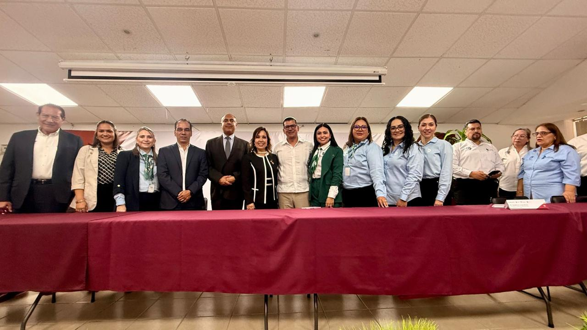
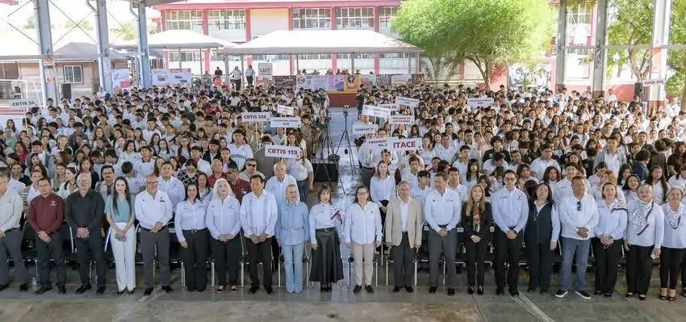
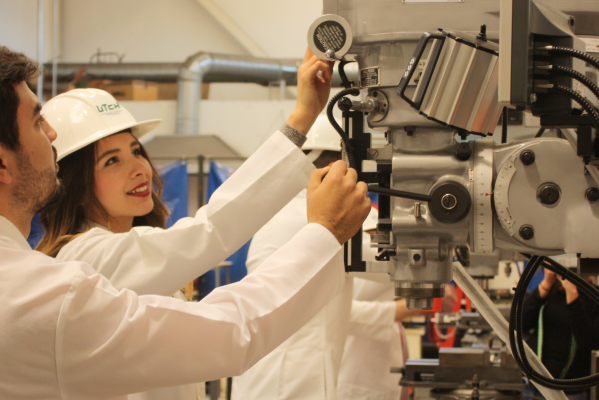

MISION
Ofrecer bachillerato tecnológico y capacitación para el trabajo formando personal calificado, para satisfacer la demanda laboral del sector productivo, impulsando el desarrollo económico del país.
Descubre una comunidad que impulsa tu talento, desarrolla tus habilidades y te prepara para nuevas oportunidades.
Seguir explorandoEl Instituto Tamaulipeco de Capacitación para el Empleo, conocido como ITACE, es una institución dedicada a la formación de jóvenes mediante una educación que combina conocimientos académicos con preparación técnica.
El ITACE está formado por estudiantes, docentes y personal que trabajan en conjunto para crear un ambiente de aprendizaje,participación y desarrollo. Cada integrante aporta sus conocimientos y habilidades para construir una mejor comunidad.
El ITACE nació hace 41 años como una escuela de oficios fundada por el Profr. Arturo Lerma Anaya
En agosto de 1984, siendo Gobernador del Estado el Dr. Emilio Martínez Manautou, se funda en Cd. Victoria el primer plantel del Instituto Tamaulipeco de Capacitación para el Empleo (ITACE), con el objetivo de preparar y capacitar al alumno para el empleo calificado.
En 1991, el Gobierno del Ing. Américo Villarreal Guerra, firma con la Secretaría de Educación Pública Federal el Convenio de Coordinación para creación, operación y apoyo financiero de las Unidades de Altamira y Reynosa. Gracias a ese impulso, el ITACE evolucionó hasta consolidarse como un modelo único que integra Bachillerato Tecnológico y Capacitación para el Trabajo.
Ofrecer bachillerato tecnológico y capacitación para el trabajo formando personal calificado, para satisfacer la demanda laboral del sector productivo, impulsando el desarrollo económico del país.

Ser reconocidos como la mejor opción educativa tecnológica, líder en formación innovadora y humana, contribuyendo a mejorar la calidad de vida de jóvenes y adultos al brindarles las herramientas, conocimientos y valores necesarios para alcanzar sus metas y construir un mejor futuro.

Lealtad:
Identificación con la institución y sus ideales.
Honor:
Impulsa a comportarse de modo que merezca la consideración y respeto de la gente.
Trabajo:
Unificación de esfuerzos para obtener excelentes resultados.
Calidad Profesional:
Personal calificado en constante formación.
Conoce los himnos que representan a nuestra comunidad educativa.
Una composición que representa la identidad, los valores y el sentido de pertenencia de nuestra institución.
Ver letra ↗Una expresión musical que destaca la identidad, la historia y el orgullo de pertenecer a nuestro estado.
Ver letra ↗Desarrollo de aplicaciones, páginas web y programas informáticos para resolver problemas mediante la tecnología.
Estudio y desarrollo de componentes electrónicos diminutos, como microchips y semiconductores, esenciales para la tecnología moderna.
Creación de ilustraciones, logotipos y contenido visual digital para comunicar ideas de forma creativa.

Instalación, revisión y reparación de maquinaria y equipos para garantizar su funcionamiento seguro y eficiente.
Organización y control del almacenamiento, transporte y distribución de productos para optimizar los procesos de una empresa.
Desarrollo y aplicación de sistemas capaces de analizar información, reconocer patrones y realizar tareas de manera inteligente.
Protección de sistemas, redes y datos digitales frente a amenazas, ataques informáticos y accesos no autorizados.
Diagnóstico, revisión y reparación de vehículos para conservar su funcionamiento, rendimiento y seguridad.
Diseño, análisis y reparación de circuitos y sistemas electrónicos utilizados en dispositivos y equipos tecnológicos.
GALERIA ITACE

ENCUÉNTRANOS
Conoce la ubicación del Instituto Tamaulipeco de Capacitación para el Empleo y consulta el mapa para planear tu visita.
Ver cómo llegar ↗Somos una comunidad educativa que busca impulsar el desarrollo académico, técnico y personal de nuestros estudiantes. A través de esta página queremos compartir nuestras actividades, proyectos, experiencias y todo aquello que representa al ITACE.